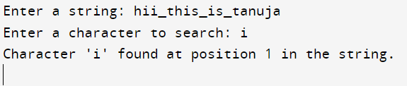

#include <stdio.h>
#include<string.h>
int linearSearchRecursive(char *str, char ch, int index) {
if (str[index] == '\0') {
return -1; // Character not found
}
if (str[index] == ch) {
return index; // Character found at this index
}
return linearSearchRecursive(str, ch, index + 1);
}
int main() {
char inputString[100];
char searchChar;
printf("Enter a string: ");
scanf("%s", inputString);
printf("Enter a character to search: ");
scanf(" %c", &searchChar); // Note the space before %c to consume any whitespace character
int result = linearSearchRecursive(inputString, searchChar, 0);
if (result != -1) {
printf("Character '%c' found at position %d in the string.\n", searchChar, result);
} else {
printf("Character '%c' not found in the string.\n", searchChar);
}
return 0;
}
Output:
